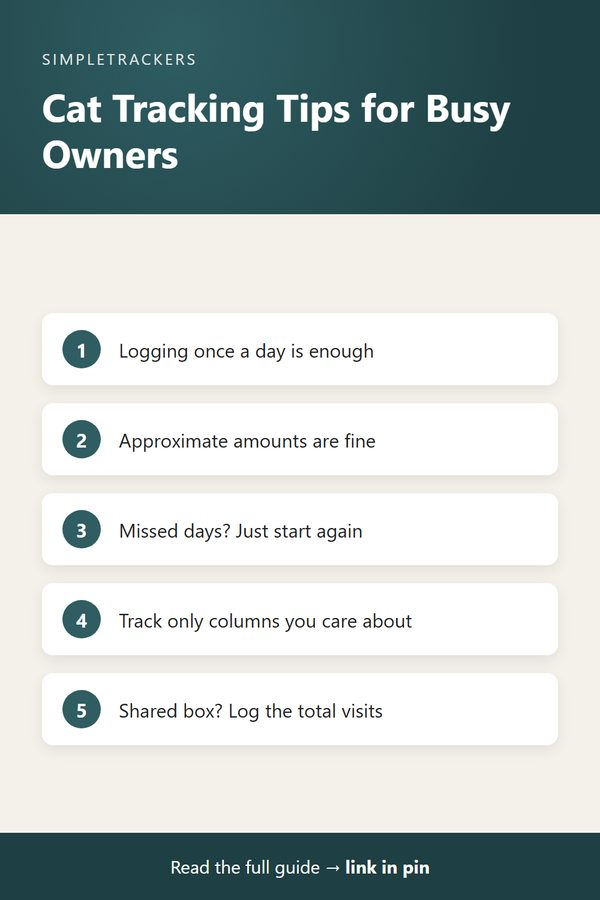

Frequently Asked Questions About Multi-Cat Tracking
← Back to the Complete Multi-Cat Household Guide
Key takeaways
- Once a day is enough: consistency matters far more than frequency.
- Partial data is fine: honest, incomplete observations beat invented complete ones. Approximations work.
- Missed days? Just start again: don't backfill from memory.
- Emergencies come first: if something seems urgent, contact your vet immediately; logging comes after safety.
- You document, your vet interprets: note the pattern and bring it in with your questions.
Common Questions About Multi-Cat Tracking
Tracking your multi-cat household is straightforward, but it's natural to have questions when you're starting out. Here are the questions we hear most often from cat owners, with practical answers to help you get started.
How Often Should I Actually Log Observations?
You don't need to log multiple times a day unless that suits your schedule. Once-daily logging is enough to build useful patterns.
| When you log | How it works |
|---|---|
| Evening (most common) | Consolidate what you noticed throughout the day |
| Morning | Log overnight and morning observations |
| Morning and evening | Slightly more detail, but not necessary |
Pick what fits your life and stick with it. Consistency matters far more than frequency.
What If I Can't Observe Everything?
That's completely fine. You're not running a laboratory; you're documenting observations you actually make.
- Didn't see it? Leave the cell blank or note "not observed."
- Shared litter box? If you can't tell which cat used it, note the total visits you observed that day.
The tracker is designed for real-life observations, not perfect data. Honest partial data is more valuable than invented complete data.
What If I Miss Several Days of Logging?
Just start again. You don't need to backfill or reconstruct what happened. If you miss three days, your next entry is Day 4 with fresh observations.
The gaps are actually useful information: they show when you were tracking and when you weren't, and your vet can account for that. Reconstructing from memory three days later introduces inaccuracy. Clear recent data beats fuzzy old data.
How Long Should I Keep Tracking?
Ideally, indefinitely. Your tracker becomes more valuable as you accumulate data and can compare patterns month to month and year to year. Even if you stop daily logging at some point, you keep a valuable historical record.
Preparing for a specific vet visit?
Even two to four weeks of data is useful. The longer you track, the more patterns become visible, but even short-term tracking gives your vet more to work with than memory.
What If My Cats Share Food Bowls?
Log what you observe. You have a few options:
- Log the total. Write "two cats ate from shared bowl" and note approximate total consumption.
- Estimate individually. Note your best estimate of each cat's consumption if you can tell.
- Feed separately during observation windows. For example, observe the morning meal and the evening meal so you can log individual consumption more accurately.
Many multi-cat owners evolve their feeding practices partly to make tracking easier. It's a bonus benefit of the system.
Do I Need to Be Precise With Measurements?
No. Approximations are fine. For water intake or food amount, any of these is enough:
- "about 100ml"
- "normal portion"
- "seemed lower than usual"
The goal is to notice changes over time, not laboratory precision. You can measure if you want to, but you shouldn't feel you have to. Simple descriptors work great for spotting patterns.
Can I Use a Tracker If I Work Full Time?
Absolutely. Working owners often use tracking effectively because it helps them stay organized despite limited observation time.
- Before work. Log morning observations.
- At lunch. Add a quick note if you're home.
- After work. Log evening observations.
Even observations from part of the day build a useful picture. You might not see everything, but you'll see consistent patterns over time. Many working owners find quick morning and evening logging takes just two or three minutes a day.

What If My Cats Don't Use Separate Litter Boxes?
You can still track. Note the total litter box visits you observed and your stool quality observations. If you can't tell which cat produced which stool, record what you observed without attributing it to a specific cat.
Over time, as you know your cats better, you might be able to make educated guesses. But you can track accurately without ever knowing individual litter box activity. Just note what you observe about the shared box.
Should I Track Every Column?
No. Track the columns that matter to you. If you care most about litter box activity and appetite, track those, and skip behavior notes or activity level if they don't interest you. You can always add columns later.
A simple, consistent tracker with fewer columns is more sustainable than an ambitious tracker that overwhelms you.
What If Something Seems Urgent?
Don't wait to log
If something seems truly urgent (severe distress, inability to move, suspected poisoning or any other emergency), contact your vet or emergency vet immediately. Your vet's immediate help is what matters.
The tracker is a tool for ongoing observation and pattern recognition, not for emergencies. Trust your instincts about urgency and act accordingly. Logging comes after safety.
Can I Export or Share My Tracker?
The tracker is a spreadsheet, so sharing it is easy:
- Print it. Many owners print relevant weeks or specific cats to bring to vet appointments.
- Email it. Some owners email their tracker to their vet before a visit.
- Export sections. Pull out just the parts you want to show your vet.
You own the file completely. It's yours to use and share however makes sense for your cats' care.
What If I'm Not Sure What an Observation Means?
That's exactly why you bring your tracker to your vet. Your job is to document what you see. Your vet's job is to interpret what it means. Don't spend energy figuring out what a pattern means; just note it and bring it to your vet with questions. That's the right workflow.
Ready to Start Tracking?
Tracking a multi-cat household is simpler than it sounds, and the value you get back for minimal daily effort makes it worthwhile. Download the Multi-Cat Household Health & Litter Tracker and start building clear observations of your cats' patterns. You'll get a pre-formatted spreadsheet with example rows showing exactly how to log (so you can start immediately without figuring out the format), a detailed guide, and everything you need. For $14.99, you invest in clarity and better communication with your veterinarian. Start today.